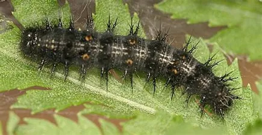
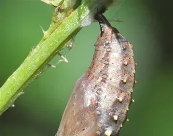
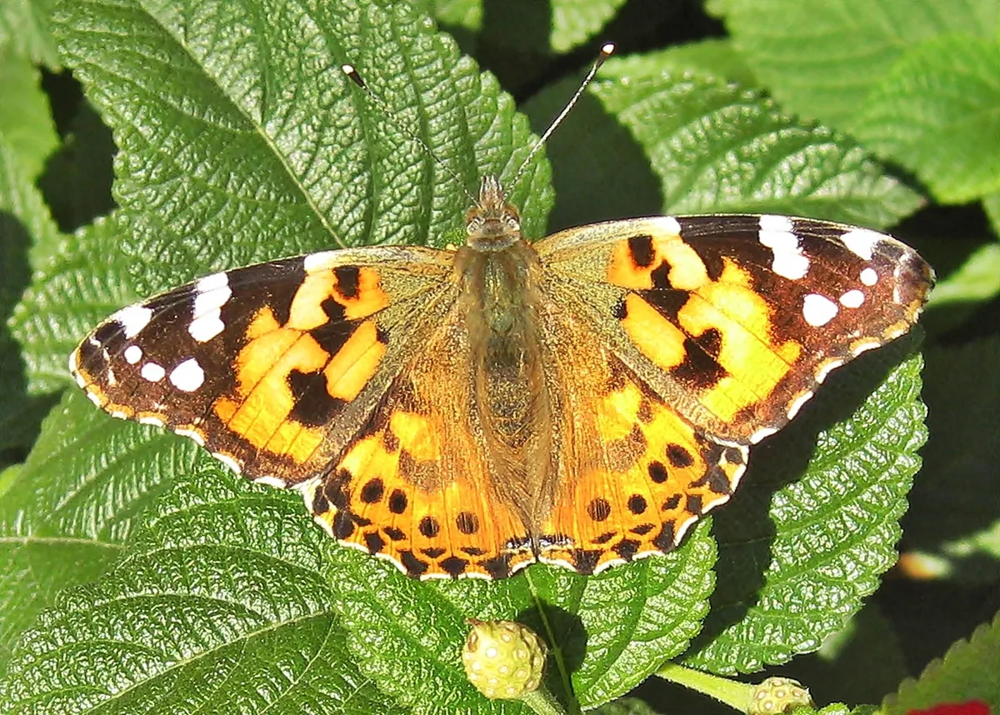

The Painted Lady butterfly, scientifically known as Vanessa cardui, is an insect that undergoes a complete metamorphosis, transitioning from egg to larva to pupa to butterfly. This web page shows each stage of the Painted Lady butterfly's life cycle, providing important details each phase. Also, the images on this page are random ones that I found on google.
The first stage of the Painted Lady butterfly's life cycle is the larva, commonly referred to as the caterpillar. During this stage, the larva feeds on the leaves of host plants, including thistle and nettles, and undergoes several molts. The larva is black, spiny, and hairy, with a yellow stripe down the back and orange dots along the sides. The caterpillar spends approximately two to four weeks in this stage, depending on temperature and the availability of food.
The second stage of the Painted Lady butterfly's life cycle is the pupa, or chrysalis, stage. The caterpillar spins a silk pad on a twig or leaf and attaches itself to it, shedding its skin one final time to reveal the pupa. The pupa is light green, and it has gold spots and black stripes. Inside the pupa, the caterpillar undergoes a large transformation, gradually turning into a butterfly. This stage lasts for one to two weeks.
The third and final stage of the Painted Lady butterfly's life cycle is the adult stage. During this stage, the butterfly emerges from the pupa, expands and dries its wings, and flies off. The adult butterfly has brightly colored orange and black wings with white spots. The butterfly feeds on the nectar of flowers and lives for two to four weeks. During this time, the female butterfly mates and lays eggs.
In conclusion, the Painted Lady butterfly undergoes a complete metamorphosis, transitioning from egg to larva to pupa to butterfly. Each stage of the life cycle is unique and critical to the butterfly's development, bringing it one step closer to completing its transformation into an adult butterfly.